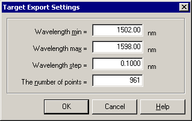

Export Target Setup
Export Target Setup
Navigation: OptiLayer Menu Commands > Analysis Menu > WDM Filter GD Performance >
Export Target Setup
` <wdm_filter_gd_performance.html>`__ ` <wdm_filter_gd_performance.html>`__ ` <rugates.html>`__

You can set the range of wavelengths (minimum and maximum) and the number of spectral points in the target by entering the desired values in the corresponding edit fields. When you change one of these parameters, the other parameters are adjusted automatically. Press OK to perform the Export Target command.